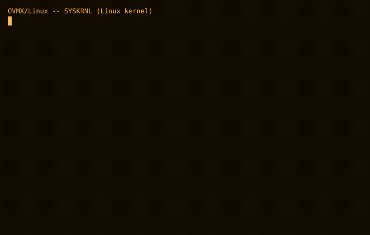
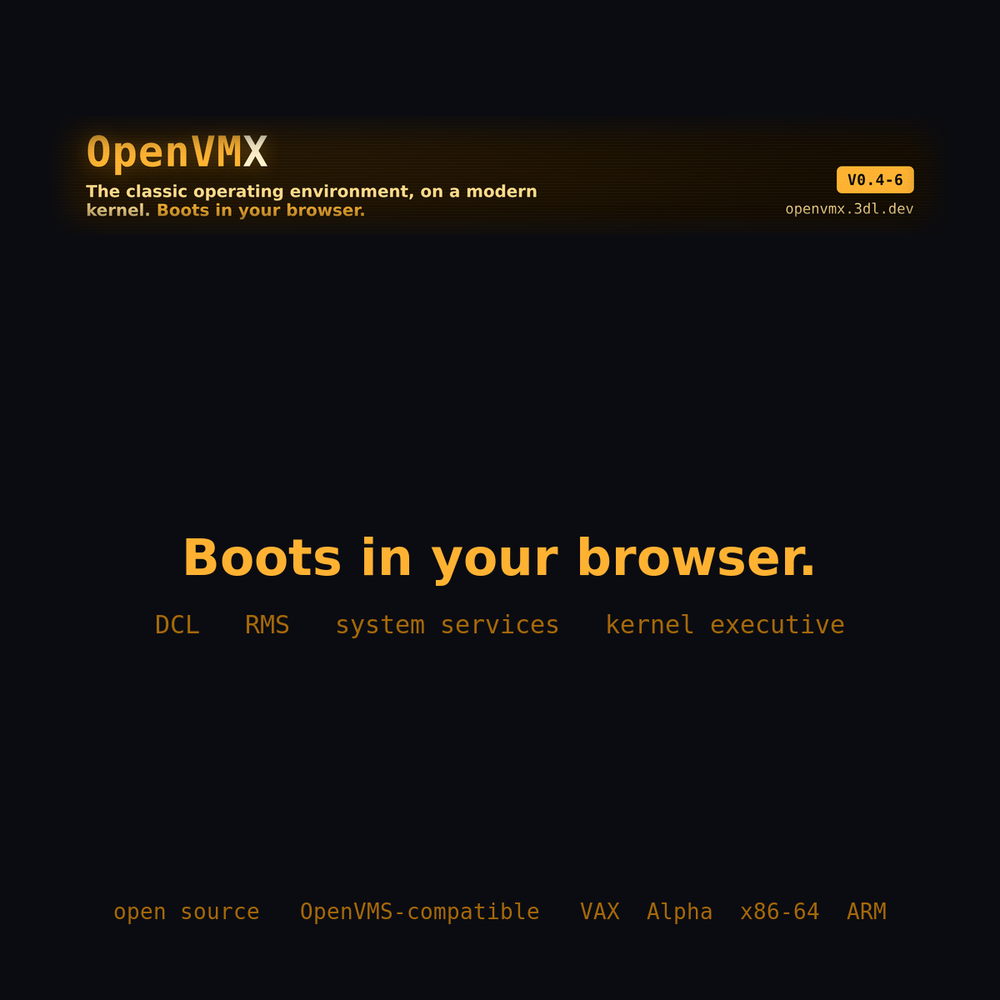
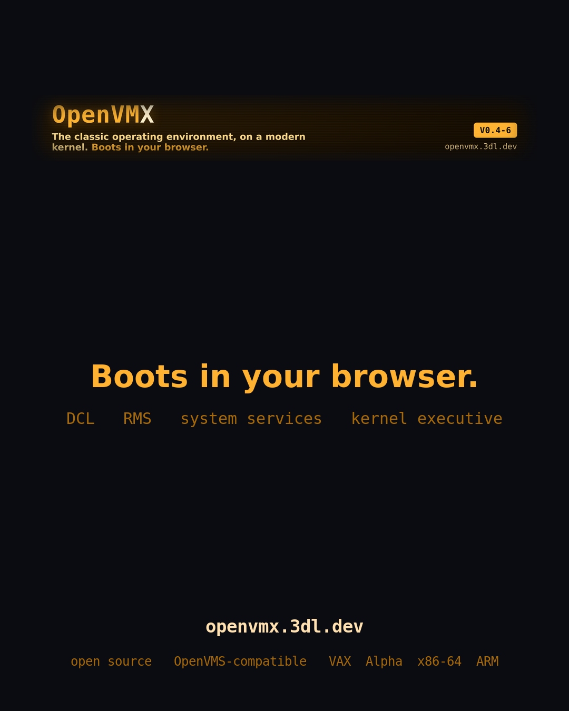

Demo video & graphics
Sized for Reddit and LinkedIn, built from a real V0.4-6 boot — the system disk mounts, the executive starts, the shareables install, and it reaches a Username: login. Silent and watermarked, so it reads on muted autoplay.
All assets: source on GitHub · regenerate with tools/webdemo/build-social.sh.
Video
↓ download .mp4
↓ download .mp4
Animated GIF

↓ download .gif
{kind=link}
Static cards

↓ download .png
{kind=link}

↓ download .png
{kind=link}
For the link-preview card (shown when you paste openvmx.3dl.dev), the site's Open Graph image is used automatically — download og-demo.png.
{kind=link}
Suggested copy
I've been building OpenVMX — a VMS-compatible operating environment (DCL, RMS, the system services, a kernel executive) with its own userland, running on the Linux and NetBSD kernels. It boots to a Username: login in about six seconds, and you can boot it in your browser. Open source. The video is a real boot. → openvmx.3dl.dev
The VMS lineage shaped a generation of fault-tolerant systems, then the hardware got abandoned. OpenVMX is an open-source, VMS-compatible environment — the DCL command language, Record Management Services, the system services, and a kernel executive, with its own userland over the Linux and NetBSD kernels, across VAX, Alpha, x86-64 and ARM. It boots to a login in seconds — in your browser. openvmx.3dl.dev
Assets are brand-safe: “OpenVMX” as the name, “VMS-compatible” as the badge. Posting is a manual step.